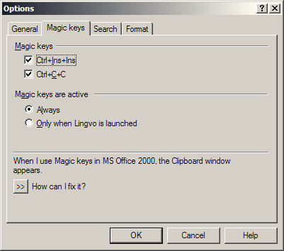
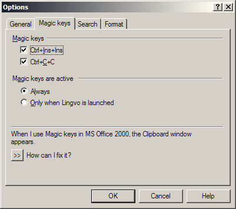
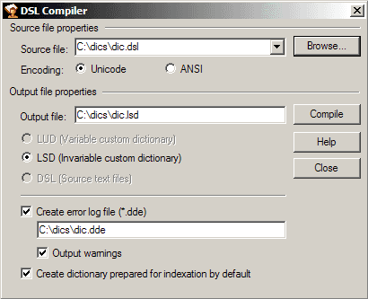

Lingvo 9.0
Хроника
Год выпуска: 2003.
Начиная с этой версии, вводятся отдельные (уникальные) словари аббревиатур для каждого пользовательского словаря. Глобальный (системный) словарь аббревиатур abbrev.dsl продолжает существовать. При отображении всплывающей подсказки поиск расшифровки выполняется вначале в пользовательском файле аббревиатур, а затем в глобальном (системном).
Внешний вид
Основное окно программы, список заголовков:

Словарная карточка:

Окошко аннотации словаря:

Окно управления словарями:

Вкладки окна настроек программы:
 



Окошко «О программе»:

Окно компилятора пользовательских словарей:

Состав словарей
| Наименование | Автор, издание | Объём |
|---|---|---|
| ... в разработке ... | ... в разработке ... | ... в разработке ... |